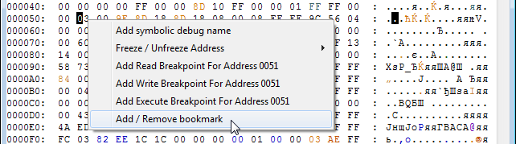

Прочие возможности окна
Вернуться на главную страницу
Содержание
Прочие возможности окна
Выбери опцию из списка, чтобы посмотреть по ней подробную информацию.
| Вкладка File |
Закладки |
Окно Find |
Файл .tbl |
Вкладка File
Save ROM
Сохраняет измененный файл. Измененные байты, подсвеченные красным цветом в ROM File, окончательно запишутся в файл и снова станут черными, что не позволит отменить проделанные изменения.
Save ROM As
Сохраняет изменнный файл с предложением выбрать имя файлу, тем самым создав отдельный файл с изменениями. Красные байты в ROM File останутся красными с возможностью отмены, даже если сохранить в тот же самый файл.
Load/Unload *.TBL File
Подробнее про файл .tbl читай в подразделе.
Load *.TBL File
Загружает файл .tbl, с помощью которого можно изменить кодировку, используемую при отображении байтов текстом в окне Hex Editor.
Unload *.TBL File
Выгружает файл .tbl, возвращая кодировку на стандартную. Опция становится доступной только при предварительно загруженном файле.
Dump to file
Создание файла .bin, состоящего из байтов выбранного в опциях диапазона. Эти файлы можно будет открыть любым Hex-редактором, а также использовать в некоторых сторонних программах.
Чтобы получить максимально точную информацию из адресов, нужно создавать файл во время паузы эмулятора, например после срабатывания брейкпоинта.
RAM
NES Memory $0000-$07FF.
PPU Memory
PPU Memory $0000-$3FFF. Может быть использован в тайловых редакторах, так как содержит в себе информацию о тайлах, фоне и палитре.
OAM Memory
OAM Memory $0000-$00FF.
6502 64K
NES Memory $0000-$FFFF.
Load from file
Копирует байты из файла .bin в указанное место. Описание опций смотри выше.
Если файл больше размера выбранного диапазона, будут скопирован лишь максимально возможный диапазон. Если файл меньше размера диапазона, появится сообщение об ошибке, и байты скопированы не будут.
GoTo Address
Окно Goto позволяет перейти на нужный адрес. Оно вызывается через Ctrl + A (или Ctrl + G).

В названии окна указан диапазон адресов текущего режима вкладки View. Введи адрес, нажми OK или Enter, и тебя перекинет на этот адрес.
Адрес не обязательно вводить заглавными буквами. Лишние нули слева можно опустить или наоборот, добавить. Можно вводить адрес с префиксом 0x.
При вводе недопустимого символа, все символы справа от него, включая неверный, будут удалены при вычислении адреса во время попытки перехода. Если же самый первый символ неверный, или если превысить лимит диапазона, тебя перекинет на самый последний адрес.
Close
Закрывает окно Hex Editor как после нажатия красного крестика.
Закладки
Закладки можно добавлять на любой адрес в Hex Editor'е. Кликни по адресу правой кнопкой и выбери Add/Remove bookmark.

Если попытаться добавить закладки на выделенный диапазон адресов, закладка будет добавлена лишь на первый адрес этого диапазона.
Имя закладки
В появившемся окне будет предложено изменить имя закладки. После добавления переименовать ее уже не получится.

Даже если закрыть окно через красный крестик, закладка все равно будет добавлена.
Подсветка закладки
Добавленная закладка выделяет байт в адресе зеленым цветом. Однако у цвета закладки низкий приоритет, и он будет перекрываться синим от заморозки и разноцветным при изменении байта в адресе.

Можно использовать закладку не как закладку, а просто как пометку некого адреса зеленым цветом.
Переход к закладке
Переход к закладке осуществляется во вкладке Bookmarks. На первые 10 закладок есть быстрый переход комбинацией Ctrl + цифра. Hex Editor при переходе переключится на соответствующий режим во вкладке в View.

Удаление закладки
Чтобы удалить закладку, снова кликни правой кнопкой по этому адресу и выбери Add/Remove Bookmark. Чтобы удалить сразу все закладки, выбери Bookmarks -> Remove all bookmarks и подтверди действие.
Хранение закладок
Список закладок сохраняется в одноименном файле .deb, который создается/обновляется после закрытия эмулятора.

В этом файле также хранятся некоторые данные из окна Debugger, подробнее читай в разделе с этим окном.
Окно Find
Окно вызывается через Edit -> Find или комбинацией Ctrl + F.
Поиск будет осуществляться по выбранной области во вкладке View. В поле ввода Find What можно записать сразу несколько байтов/символов. Кликни на кнопку Find Next или нажми Enter для попытки поиска. Текущий найденный результат подсвечивается как при выделении мышкой этих адресов.
Есть встроенное ограничение по количеству автоматически выделенных символов, но это не влияет на результат поиска.
Опции поиска
В разделе Type ты выбираешь тип данных - байты (опция Hex) или текст/символы (опция Text).
В разделе Direction выбираешь направление поиска - вверх (опция Up) или вниз (опция Down).
Попытавшись искать байты с опцией Text, или текст с опцией Hex, окно Find выдаст ошибку Invalid String (неверный ввод).
Поиск Hex
При выборе опции Hex, поиск будет искать байты в адресах. Байты не обязательно записывать заглавными буквами.

Если ввести нечетное количество символов, последний символ справа не будет учитываться при поиске.
Поиск Text
Если выбрана опция Text, поиск будет работать с кодировкой байтов в правой части окна. Поиск текста чувствителен к регистру (строчные и заглавные буквы).
Поиск текста технически является поиском соответствующих байтов. Если у одного и того же символа существует несколько вариантов байтов (например у символа точки в кодировке по умолчанию), поиск текста будет искать лишь самый младший из них, из-за чего он может и не найти желаемого результата.
Если подключить свою кодировку через файл .tbl, текс будет искаться с учетом новой кодировки.
Результаты поиска
Если существует 2 и более результатов поиска, то нажимая на кнопку Find Next, Hex Editor будет переключаться между этими результатами в ту сторону, которая была выбрана в разделе Direction.
Если вообще никаких результатов не было найдено, будет сообщение String Not Found (результатов не найдено).
Это сообщение вылезет и в том случае, если существует всего 1 результат поиска, начальный адрес которого уже выделен в Hex Editor'е (или выделен как первый адрес диапазона).
Файл .tbl
Table file (таблица кодировки) - текстовый файл с расширением .tbl, в котором хранится информация о том, как именно нужно отображать байты текстом. Содержимое файла выглядит как "байт" + "=" + "символ". Каждый байт должен быть записан с новой строки.

В качестве символа после "=" могут быть цифры, строчные и заглавные буквы, и некоторые другие символы.
Старая версия эмулятора не поддерживает символы кириллицы. Кодировка файла должна быть ANSI.
Номера символов
Чтобы узнать какой байт в игре отвечает за какой символ, открой PPU Viewer во вкладке Debug, наведи курсор на нужный тайл, и номер этого тайла отобразится внизу рядом со словом Tile.
Довольно часто заглавные буквы английского алфавита начинаются с #$41, цифры с #$30, а пробел = #$20, поскольку такой формат соответствует основным видам кодировок.
В некоторых играх, которые переключают банки с тайлами, может быть несколько наборов символов под разными номерами, в зависимости от того, какой банк был подключен и в какую область он был подключен. В таком случае может понадобиться создание нескольких .tbl файлов под все эти ситуации.
Выяснив байты символов, записываешь их в свой файл. После символа "=" можно записывать лишь 1 символ, остальные будут игнорироваться. А если ничего не записывать, символ будет отображаться в Hex Editor'е как точка.
Для более удобного создания .tbl файла воспользуйся специальной программой, например Oriton, описание работы с которой будет на главной странице.
Подключение файла
Подключив созданный файл в Hex Editor'е через вкладку File, ты изменишь отображение кодировки на свою, что неплохо помогает увидеть текст, который находится в игре.

Если в файл составлен некорректно, вылезет сообщение об ошибке с указанием того, на какой линии обнаружена первая ошибка. Предыдуший файл .tbl, если он был ранее загружен, будет выгружен из Hex Editor'а.
Поиск текста
После подключения файла ты можешь пользоваться поиском по тексту, который будет учитывать твою кодировку, или просто просматривать области NES Memory, PPU Memory и ROM File в поисках текста. Это также упрощает ввод текста при переводе игр, если вводить текст в правую часть окна Hex Editor'а вместо ввода соответствующих байтов.
Если символ, который ты пытаешься ввести, не указан в файле .tbl, символ не будет введен. Добавь символ в файл, переоткрой его в Hex Editor'е и попробуй снова.
В файл можно добавлять собственные обозначения определенных байтов, используемых игрой при работе с текстом. Например, если байт #$F0 отвечает за перенос текста на новую строку, можно записать в файле F0=/, а затем записывать символ "/" при необходимости переноса дальнейшего текста на новую строку.